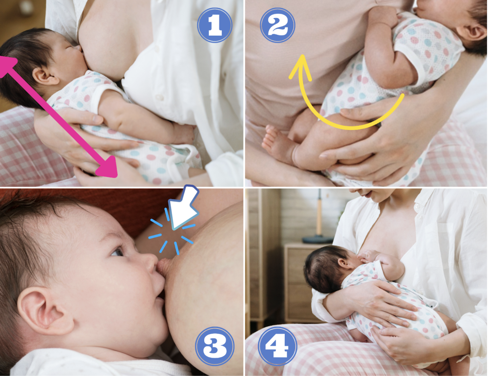
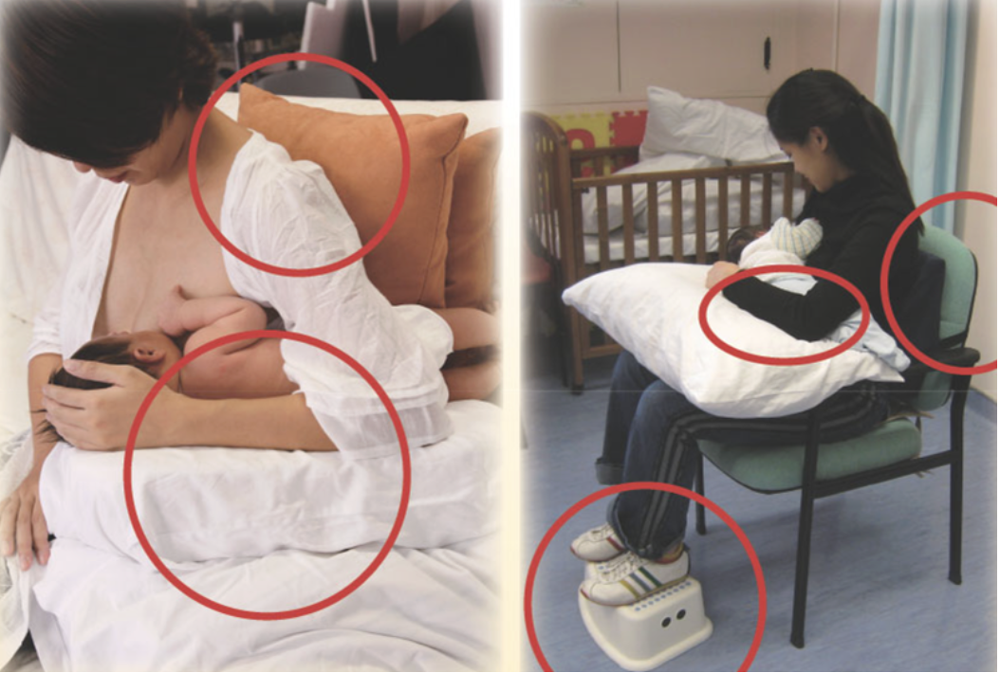

Tài liệu hướng dẫn chuẩn hóa y học cộng đồng

Bế bé cho bú, điều đầu tiên mẹ hãy chọn cho mình không gian thoải mái nhất, sử dụng các vật dụng hỗ trợ nếu cần.

Đây có thể là tư thế bú mẹ phổ biến nhất và rất phù hợp cho những lần đầu mẹ và bé bắt đầu tập bú. Tuy nhiên, đối với các mẹ sanh mổ có thể sẽ không thoải mái lắm vì em bé nằm ngang bụng mẹ gần với vết mổ.
Đối với tư thế này, mẹ ngồi tư thế thẳng lưng trên ghế có tựa lưng, hoặc ngồi trên giường tựa lưng vào tường. Cần lót thêm đệm hoặc gối để mẹ được thoải mái nhất.
Cho bé bú bên bầu ngực nào thì dùng tay cùng phía với bầu ngực đó để đỡ bé (Ví dụ: bú bầu ngực bên phải thì dùng tay phải để ôm và nâng đỡ người bé).
Đây là một tư thế phù hợp với các mẹ sanh mổ hoặc các mẹ sanh khó hay trong trường hợp cho bé bú vào ban đêm.
Mẹ nằm nghiêng 1 bên và đặt bé ngay bên cạnh.
Em bé nằm nghiêng hướng về mẹ, bụng bé chạm bụng mẹ, sao cho tai – vai – hông bé phải nằm thẳng hàng.
Mẹ có thể dùng gối để tựa đầu, tựa lưng và kẹp giữa 2 gối sao cho thoải mái nhất. Lưu ý gối tựa đầu của mẹ phải đảm bảo không được quá gần đầu hay mặt bé. Mẹ dùng 1 tay để chặn gối lại để gối không chạm vào bé.
Tay còn lại mẹ dùng hỗ trợ bé nằm đúng tư thế và nâng đỡ bầu vú để bé dễ dàng ngậm bắt vú.
Cuộn khăn hoặc mền lót phía lưng bé để hỗ trợ bé nằm nghiêng bú được dễ dàng. Lưu ý cần lấy khăn/mền ra khỏi khi bé đã bú xong.
Giai đoạn 1-2 ngày đầu bé có thể hay nhả nhớt trong miệng, bị ọc hoặc bị sặc nên khi nằm cho bú mẹ có thể nâng đầu giường lên cao hơn một chút hoặc lót cho bé nằm tư thế đầu cao hơn thân người. Người thân đi chăm sản phụ cần canh chừng 2 mẹ con lúc này vì mẹ còn mệt nên trong quá trình nằm cho bú có thể sẽ ngủ thiếp đi và đè con.
Đây còn gọi là tư thế thư giãn hay tư thế bú sinh học. Với tư thế này mẹ có thể ngả người thoải mái trên ghế sô pha hoặc trên giường.